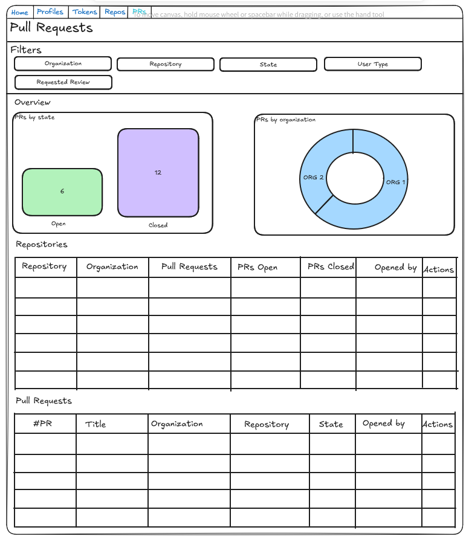
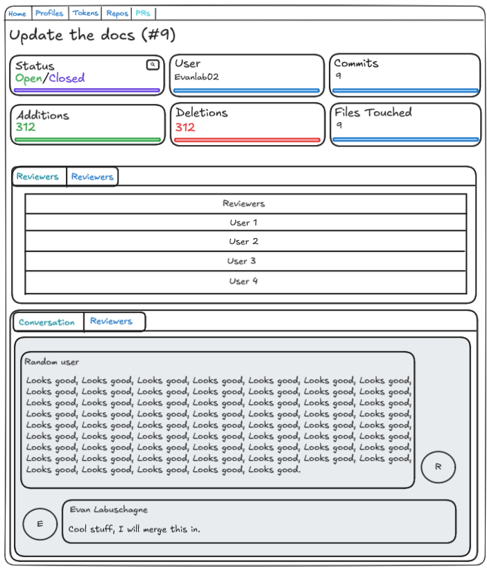
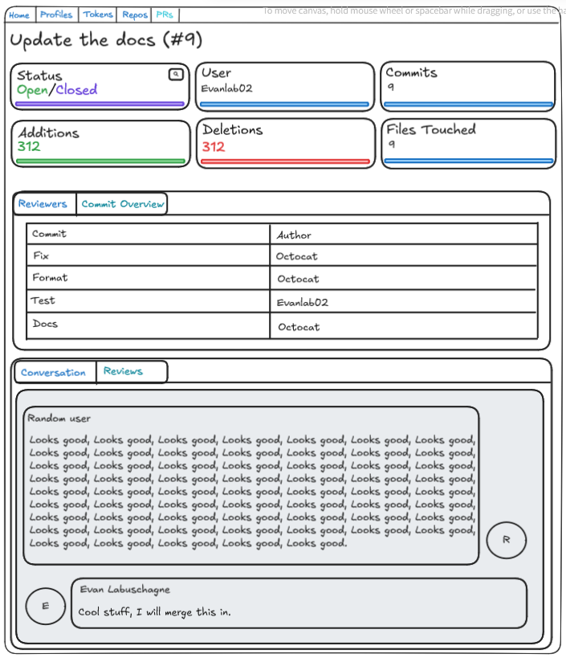

Project Outline - V1
The project will should allow users to do the following things in the V1 release:
- List all pull requests for the repos they specify.
- They will have the following fields shown:
- PR ID and link
- Organization
- Repository
- State
- Title
- PR opener
- Two charts
- PRs by state
- PRs by organization
- The user will be allowed to filter out repositories based on different fields, they should be able to filter by:
- Organization
- Repository
- State (Open by default)
- User type of pull request creator (User by default)
- If you have been assigned a reviewer. (True by default)
- The should also be allowed to sort the results.
- They will have the following fields shown:
- View the details of a specific pull request.
- There should be the following elements on this page
- Heading with the title of the PR
- Card with the state
- Card with the PR opener
- Card with number of commits
- Card with number of additions
- Card with number of deletions
- Card with changed files
- Tab Component
- PR reviewers
- Line chart with commit overview
- Tab Component
- Conversation/Comments panel
- Conversation/Reviews panel
- There should be the following elements on this page
Setting up users
Users will be able to create "GitHub Profiles" associated to their account/user. These GitHub Profiles will align to a existing GitHub profile.
This is to allow users to create different profiles for work and personal accounts as an example.
These will require the following fields:
- ID (primary key)
- Name (Ex. Evanlab02)
- Project user (foreign key)
Setting up tokens
The API will force using GH tokens to request data from the API.
Therefore you will need to create records with the GitHub API tokens. You can create your own names for these.
- ID (Primary key)
- Name (Ex. My personal token/My work token)
- Token (The GH token)
- Project user (foreign key)
Setting up synchronized repositories
You will also need to tell the API which repositories it should use. This will link to your profile and tokens. The profile part will enable us to differentiate things like comments indicating your comments different than other users comments.
- ID (Primary key)
- Organization (Ex. Evanlab02)
- Repository (Ex. GitTogether)
- GitHub Profile (Foreign Key)
- GitHub Token (Foreign Key)
- Project user (foreign key)
Pull requests - List View

Getting the data
To retrieve this data, we will be using the GitHub pull requests API.
curl -L \
-H "Accept: application/vnd.github+json" \
-H "Authorization: Bearer <YOUR-TOKEN>" \
-H "X-GitHub-Api-Version: 2022-11-28" \
https://api.github.com/repos/OWNER/REPO/pulls
Filters and Charts
To calculate the filters, we should only require the values that have been manually configured by the user.
For the charts, we will be able to calculate this from the values we have received from the GitHub API.
Table
The tables are pretty standard except for 2 things
In the repository table, we will have 2 buttons in the actions column that does two things:
- Resync for organization
- Resync for repository
What this will do, is just destroy the old cached value(s) for a repository or organization, and then re-query and cache them.
We will also have a button on the PR table that will take you directly to the GitHub pull request.
Caching
The GitHub API only allows requests for a single repositories pull requests and there is rate limiting on the GitHub API. So we will need to ensure that these requests are cached.
All results will be cached for 1 hour. This helps the application only pull what it needs at the time.
How we will cache
If we use something like Redis, the key will be something like
<org>-<repo>-prs with a value of the API response payload.
Pull requests - Detail View
This page will also use caching. Which will be covered below.


Cards
Here we will outline some key details about the PR.
There will be buttons on the state card that will allow you to view the PR or resync it.
Caching
If we use something like Redis, the key will be something like
<org>-<repo>-pr-<number> with a value of the API response payload.